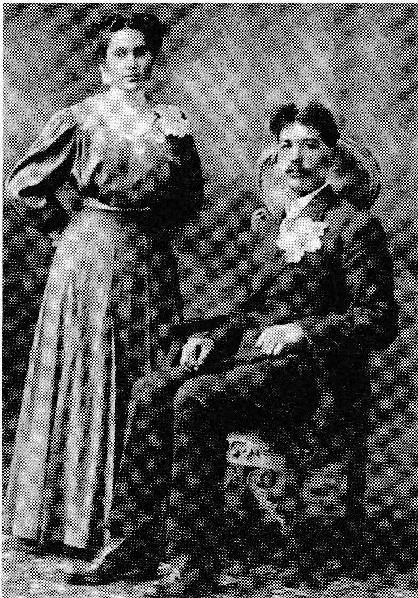
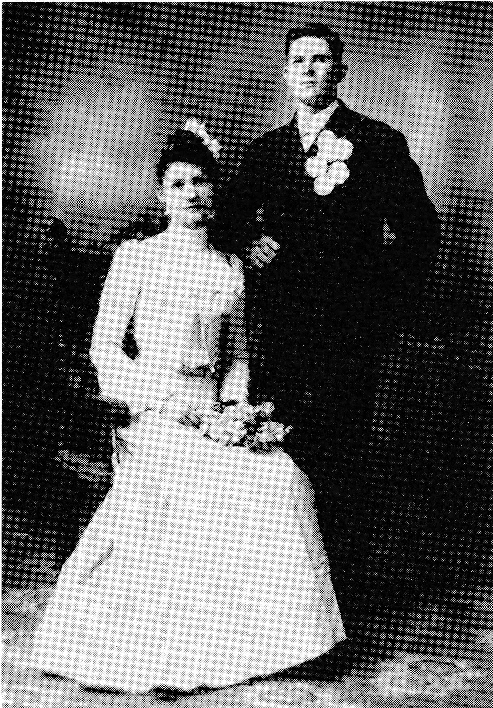
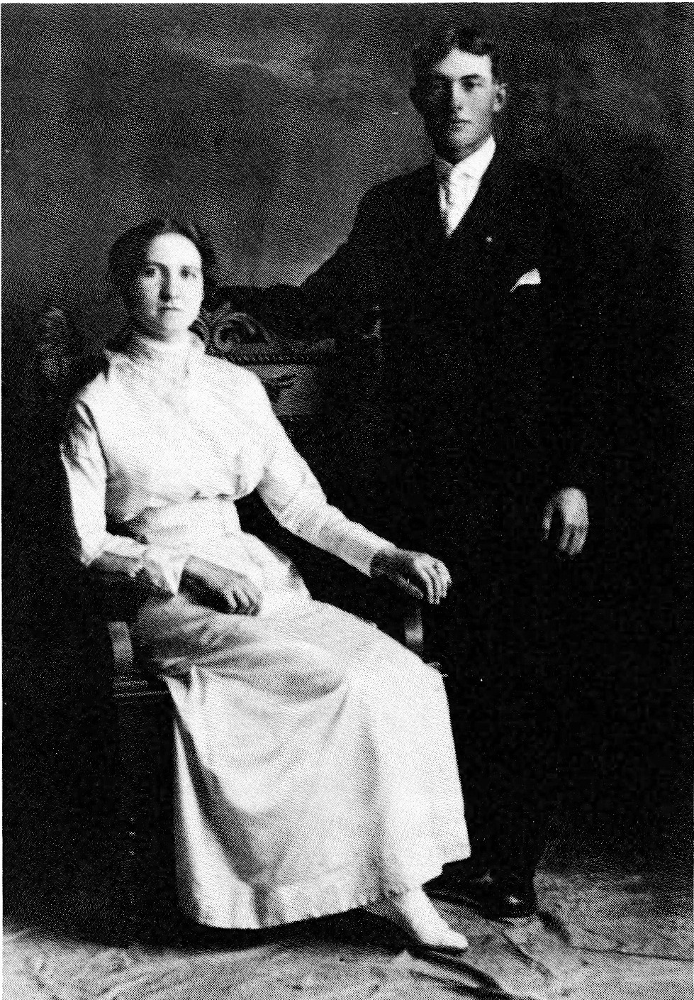
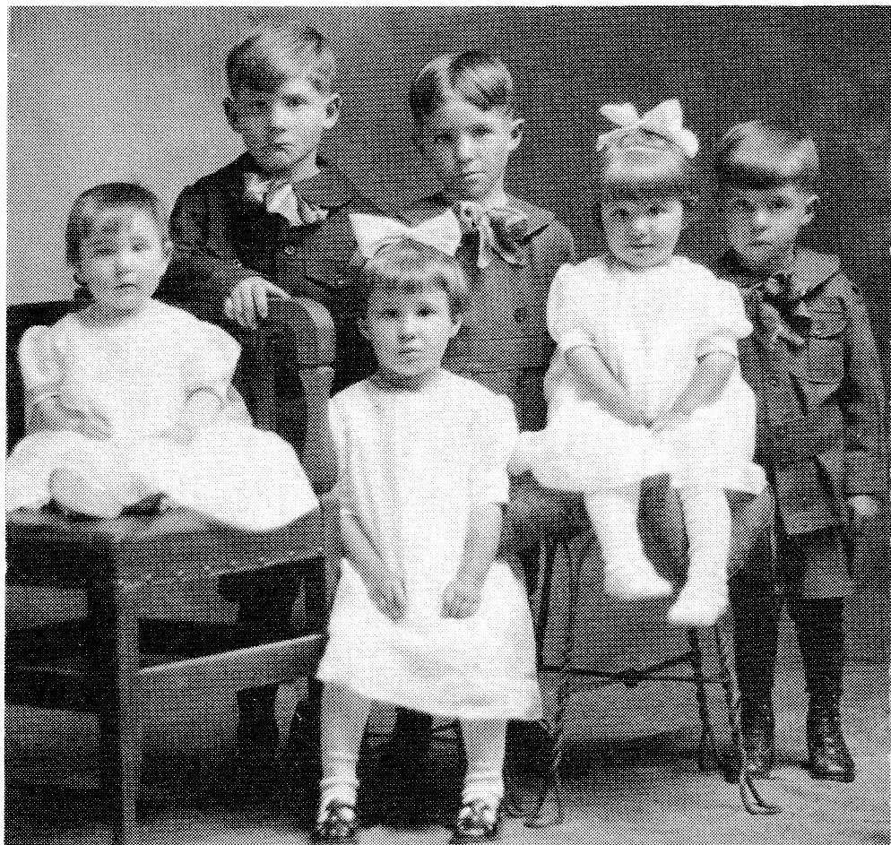
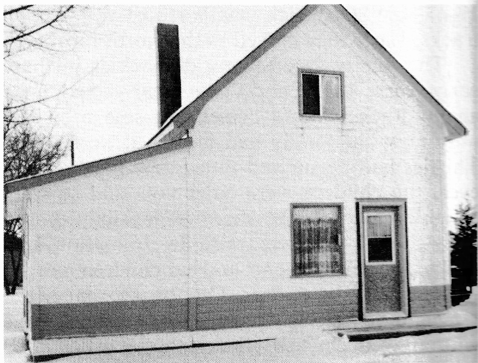
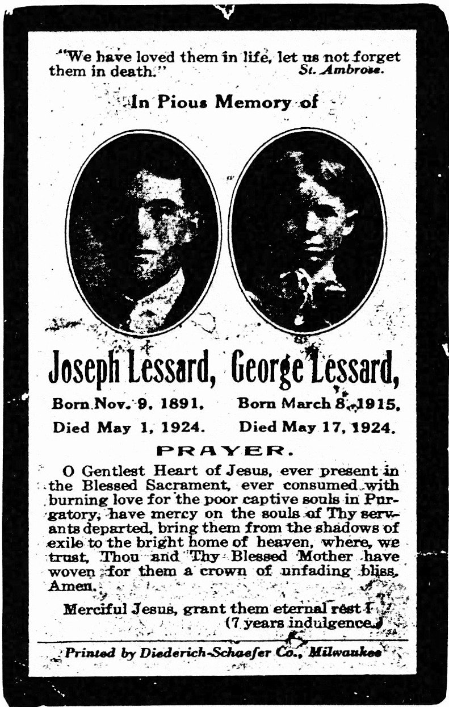
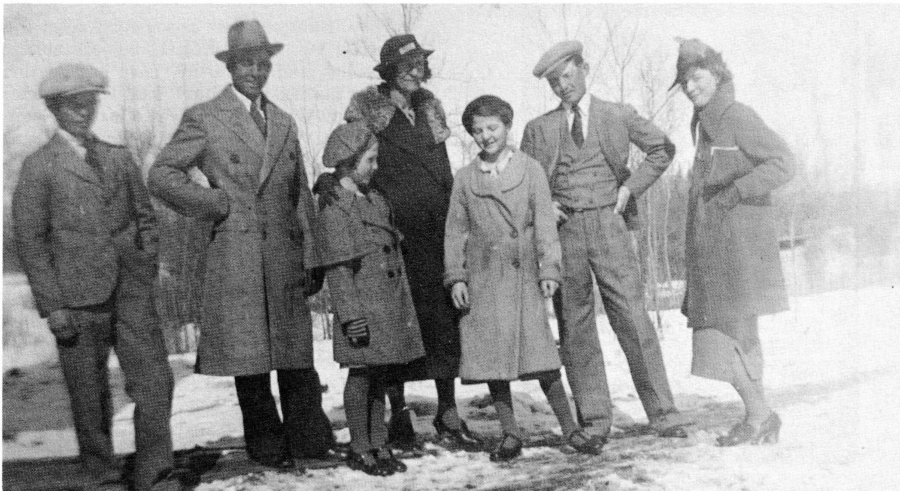

EDOUARD LESSARD
Submitted by Eva (Lessard) Prince
Edouard had married earlier. They had no children and his first wife died. Then he married Valérie Allard. There was quite a difference in their ages.
My grandparents, Edouard and Valérie, were both born in the parish of St. Alexis des Monts in the District of Trois Rivières, Conté de Maskinongé, Québec, Canada and lived there for some years. Having heard of the development of Western United States and wishing that their sons would take to farming, they decided to move by train to Red Lake Falls County, Minnesota. When they arrived, they took up land through the Homestead Act in 1886.
They settled in Lambert Township, built a small home and got a few cows, horses, a couple of hogs and chickens. They also planned out a piece of land by the house for a large garden.
This was a French family – not one could speak or write English. The older ones went working for people around Lambert and those of school age started school. It must have been very hard for both teachers and pupils; however, they managed very slowly at first. Some of the older children did not have time to learn English as they had to help out making some wages to get the farm going (buying lumber, horses, machinery and some grain the first year).
Later on the other children learned to read only English because, in the northern States especially, French was not taught in schools except perhaps in high schools or colleges. My grandmother, Valérie, had never learned to either read or write French or English as, when she was young, there were no schools around and they were too poor to go elsewhere, but she had learned her prayers by memory. She also learned cooking and was a real good cook.
There were lumber camps in Minnesota and the older boys worked there for many winters – some, like my father, even after they were married. My father had four horses all well shod to work through the winter hauling logs out of the bush.
One evening when father was home from camp, our family went to visit Grandma and Grandpa Lessard. We stayed for supper. The food was on the table; it was time to eat. There was other company that evening, a couple of men who could not speak French. Grandma wanted to tell these folks that after they had eaten, she and Grandpa were going to visit the Caribeau family, folks who had come from the same parish in Quebec as they had, and the men were invited to go along but she had difficulty putting her message across. She was able to gesture putting your hat and coat on and she could say "visit." Then she wanted to tell them that she was going to go along with them, too. So she said in her broken English, "all tee-gai-dere" (meaning altogether).
Although my grandparents – both Lessard and Bernier – weren't religious, there was always prayer in their homes. The family would gather to pray and if some of the children would get up before time, the parents would remind them "à genoux – à genoux." They believed in God and went to Church each Sunday. Very often they would walk the mile and a half to attend Mass.
Now here are all the children; my father was the oldest:
- Alfred married Lucias Bernier in September 1905 in Lambert, Minnesota.
Their children:
Eva b. August 24, 1906 in Minnesota
m. Charles Prince 1925
Lawrence b. July 7, 1915 in Minnesota
m. Reine Lavoie in 1940
Lucille b. July 8, 1918 in Saskatchewan
m. Rémi Arcand of Chilliwack, B.C.
Emma b. May 17, 1920 in Saskatchewan
m. Phillippe Gagne of Noranda, Quebec - Alzéma married Cléophasse Asselin. They lived close to Oklee, Minnesota.
Their children are:
Doria
Omer
Eugène
They also raised her sister's baby girl, Gloria Landreville. - Parmélia married Louis Bernier – deceased.
Their children are:
Edmond Bernier resides in Oklee, Minnesota
Emma Knotts lives in Yuma, Arizona
Parmélia remarried Butcher (pronounced Boucher) - Charlie married Rose Asselin. They are both deceased. They had always resided on the old homestead in Lambert Township, Minnesota.
Their family of fourteen children is as follows:
Raymond b. 1920
m. Maryann Nistler 1949
George Delores
Walt Theresa
Maurice Marie
Harold Yvonne
Ken Terry
Vern Sharon
Marcella
(Not necessarily in that order.)
5. Joseph Déridé was born November 9, 1891, in St. Alexis des Monts, Quebec. He married Rachel Bernier on April 14, 1914 in Red Lake Falls, Minnesota.
Their children are:
George b. March 8, 1915 in, Minnesota
d. May 17, 1924, North Battleford, Saskatchewan
Gene Alfred b. December 16, 1916, in Oklee, Minnesota
m. Edithe Marie Blandine Alain October 26, 1945
Joseph Noé Napoléon b. April 26, 1918, Delmas, Saskatchewan
d.
Clara Edith b. November 24, 1919, Delmas, Saskatchewan
m. Louis Alfred Alain April 12, 1937
Martin Alphonse b. August 25, 1921
m. Floris Tarvis July 17, 1942
Joseph b. February 12, 1923
m. Helen Tapper June 26, 1947
Marie Jeanne Thérèse b. November 16, 1924, Delmas, Saskatchewan
m. Al MacFarlane October 11, 1947
Joseph Déridé Lessard was deceased on May 1, 1924, North Battleford, Saskatchewan.
Rachel married Louis Strasser August 13, 1927, at Battleford, Saskatchewan. They had one child:
Mae Strasser b. May 15, 1928 on home farm at Veillardville, Saskatchewan
m. Bernard Daly October 9, 1948
6. Philias D. was born in 1896 in St. Alexis des Monts, Québec. At the age of two he moved with his family to Lambert County, Minnesota. Philias married Rose Boisvert in 1921. They are both deceased. Rose was buried in September 1985 in New Jersey, U.S.A. Phil died in 1978.
Their children are:
Dora m. John Etcheverry
Delores m. Hervé Nolin
Eleanor m. Phillip Hardy
Anna Mae m. Bob Taylor
Alida m. Joe Cadrain
Jeannette m. Dan Chesire
Denis m. Audrey
7. Marie Louise married Emile Landreville. She had been married a couple of years when her first baby, a little girl, was born. After arriving home with the baby, she suddenly felt very chilly. She asked her mother-in-law to please warm her up but they could not. Marie Louise passed away before the priest arrived to give her the last Sacraments.
Gloria Landreville was raised by Alzéma and Cléophasse Asselin.
8. Aldéa married Walter Sabourin. She died shortly after coming to Uncle Charlie's wedding. They had two sons.
9. Annie (Sister Valeria) - [Editor's Note: Here, Eva tells us that Annie was almost her twin because Eva was only six weeks older than her.] Annie had never seen a nun until Mrs. George Charette passed away in Minnesota. At that time, her three daughters that were in religious life as nuns in Duluth, Minnesota, had come to their mother's funeral in Oklee.
Aunt Annie contacted them and mentioned to them that she would like to enter their congregation. So, of course, they told her to come to Duluth and see the Superior and, sure enough, Aunt Annie entered the convent. She finished her studies and taught school a number of years until she required serious head surgery. She recovered but was not able to teach after that. She was given other tasks to do.
10. Frank was born in Oklee, Minnesota, in 1903. He married Ruth Iverson in 1927. Frank died in March 1977. Ruth resides in North Battleford.
Frank came to Saskatchewan in 1923 to visit his two older brothers, Fred and Joe, whom he worked for at harvest time. That winter Frank went back to Minnesota. The following spring he returned to work on the farms in the Prince-Fitzgerald district where his brothers were. We had nice neighbors where he would go and play ball with them. He got to know the girls also and pretty soon he told us he was going to marry Ruth Iverson.
So my girlfriend became my aunt. They raised a family of five:
Maurice Joseph b. 1928
Residing at Joseph Lloyd b. 1930
Residing on the home farm
George Lionel b. 1933
Residing in Edmonton
Myrtle Marie b. 1935
m. Earl Lawrence and is residing in Kelowna, B.C.
Raymond Edward b. 1936
Residing at
11. Albert is the youngest of the family. He was living in Oregon, U.S.A., for a number of years. He married and had a couple of children. Then they parted. His children go to visit him in Red Lake Falls, Minnesota, where he resides in a home for the aged.
[Editor's Note: Of Edouard's children, three of them (Alfred, Parmélia and Joseph) married children of Siméon Bernier (Lucias, Louis and Rachel).]


Part IV - Lessard Family Stories
JOSEPH DÉRIDÉ LESSARD
Joseph's story has been put together with the assistance of many people: his children, Gene, Clara and Martin; his niece Eva (Lessard) Prince; Mae and Bernard Daly. As well, a large portion of "The Joe Lessard Story" which was printed in Footsteps In Time (a history book of the Meota area) has been used.
Joseph Déridé Lessard was born November 9, 1891 in St. Alexis des Monts, Québec, to Edouard and Valérie Allard. In 1896 Edouard moved with his family from the French Catholic parish set in the province of Québec to Minnesota, U.S.A. Not only was the move to a new country but it was also to an area newly settled, Lambert County. Although there were Norwegians who had arrived from Norway, the majority of the population was French and many other families like Edouard's had moved there from Canada.
Lambert Township, still in existence today, was named for the many Lambert families who settled there. In fact, it was at the home of François Lambert on January 28, 1882, that a meeting was held to organize the township. The area was soon settled for when the 1910 Census was taken, there were ninety-three families with the total population of the Township at five hundred and thirty-three. 1.
Speaking only French, Joseph at six years of age and his brothers and sisters would likely have found the area both strange and interesting. There was a school for the children two and a half miles away. It was School District #76 and it was built on the N.W. boundary of Section 8.
This building is still in use at the time of this writing. Standing on the original Lambert townsite, it is used as a town hall and holds the town papers.
A year after the Lessard family arrived, the first Post Office was established. It was located in the Sylvin Gergevin Store.
One of the earliest stories of Joseph came from his niece, Eva, who recalled an incident which took place at the lumber camp where Joseph worked before he was married. "While pushing logs on the river he had misstepped a log and slipped in the river. You may imagine how scared he was because he could not swim and in that cold spring water, he was yelling so someone would hear him. All at once, he saw a man not far from shore who was trying to break a branch from a tree to help him. It so happened that he was a kind Indian. He presented the limb to Uncle Joe who grabbed it so quick and strong that the Indian dropped it. Uncle would have been done for but the Indian was quick and began again. This time he succeeded and brought Uncle to shore. He said to the Indian, 'Do you use snuff?' He said, 'Yes.' So Uncle Joe gave him his box and he said, 'If I ever see you again, I'll give you another box.'"
Joseph's oldest brother, Alfred, had married Lucias Bernier in 1905. Lucy's parents, Siméon Bernier and Célinère (Berry) who resided in the same township had also moved there from Canada. Living only a couple of miles from the Bernier family, Joseph would have found it a simple matter when he was home to call on Rachel, Lucy's youngest sister.
Rachel was a tall, raw-boned girl with blue-grey eyes. Born November 9, 1895 in Lambert, Minnesota, U.S.A., she was baptized the same day in the parish at Oklee, Minnesota.
Only a little is known about Rachel's childhood but we know she went to school in her district. Later she attended the convent at Duluth where she took music lessons. Although there was not a piano in the Bernier home in the earlier years, they had acquired one by this time.
When Rachel was young, the school teacher boarded at her home, which proved later to be most beneficial. This teacher taught the Bernier children to read and write in the French language. Years later Rachel related the following to her granddaughter, Marlyne: "I won an award when I was nine years old for my achievements in French." The award was a small glass lion which she treasured throughout her life. At the time of her death, it was willed to her daughter, Therese.
While Rachel was a young girl, she learned to sew. Unlike her oldest sister, Rachel had much patience. She took great care to follow the pattern and the finished product fit well. It also
1. Information taken from The Oklee Community Story and/or A History of Red Lake County.
looked good for Rachel took a personal pride in her work. If she wished to trim an article with another piece of material, the young seamstress made certain the material used was well matched. The finished garment was not to look as though it had been made at home. In fact, some time later, she and her niece, Rachel Toulouse, would view a dress in a store window and then they would copy the dress by drawing it on paper and proceed to make a pattern and sew it up. They then wore their new dress back to the dress shop where the store owner thought they had bought the dress at his shop. They had copied it so exactly that it was impossile to tell the difference! She had a great talent and a good eye for what could be made out of certain pieces of material.
Many years later, Rachel worked for a Father Proulx in Minnesota. He would drive her into Thief River Falls where she would buy yards of organdy and then return home to make dresses for her granddaughters. Father would laugh at her and say, "I'm paying her to cook for me and here she is sewing for her grandchildren." Then just as quickly he would turn to Rachel and say, "Go get the dresses and show them off." Rachel's talent and enjoyment for sewing did not diminish with the years.
Rachel learned to sew from her mother. Célinère sewed the clothes worn by all of her children. Though they were plain, they were well made. She would buy her material by the yard when she'd go to MacIntosh with the men.
At that time the farmers didn't have grist mills to grind their feed for the pigs and cattle. So periodically they would take a load of grain to the mill in MacIntosh. Then, while the men were taking care of their business, Célinère would purchase her groceries and yard goods.
Now, before each of her trips to MacIntosh, she would leave the command that the girls were not to use the scissors while she was gone. In the past, they had spoiled many clothes. So the order was given each time and all five of the girls were expected to obey - it was like a commandment.
Rachel had three other sisters besides Clara. She was the oldest of the family, then Lucy, Délia, Léah with Rachel the youngest of the girls. She was followed by her brothers: Albert, Fred, Louis and Alvida.
After the second oldest girl, Lucy, was married Rachel would go to visit her. In 1906, Lucy and Alfred's first child was born. They christened her Eva. Rachel, at eleven years, must have enjoyed her little niece.
Rachel wasn't the only relative to enjoy the little girl. One of Eva's uncles, Joseph Lessard, used to come by and one day he brought his niece a pair of scissors. They were in the shape of a bird. Eva liked her little scissors and often used them to trim the Sears & Roebuck catalogues.
The scissors caught the eye of another girl. Whenever Rachel would visit Eva, she would ask to see them. Perhaps it was because they reminded her of the young man who had given them.
Before long this same young man began to notice Rachel. Their niece, Eva, wrote this about their courtship: "It seems as if Aunt Rachel knew when Uncle Joe would be back from camp in the spring. He would then come home with Dad and Uncle Joe would wash his buggy up nice and curry his horse, Bell. Then, after a stop at the barber shop, Joe would come along to give Rachel a buggy ride. They were as happy as a pair of birds on a branch."
Years later, one of Rachel's daughters related the following: "The first time Joseph Lessard took out Rachel and her father had discovered that this young man had had his daughter out, he warned her that she was never to see that man again because he was an ivrogne - a drunkard. He said he didn't ever want to see him around his daughter. Sometime later she had a chance to see Joe and she told him this. He promised her he would never touch alcohol again if she would marry him. As a matter of fact, he never did with one exception - that was on their wedding day and, as I heard it, it was in fact Siméon Bernier, his father-in-law, who asked him to have a drink of wine to celebrate his wedding."
At twenty-three years of age, Joseph married Rachel, daughter of Siméon Bernier and Célinère Berry of St. Jospeh's Parish on April 14, 1914. They were married in Saint Joseph's Church at Red Lake Falls, in the State of Minnesota. Charles, Joseph's older brother, and a friend, Rosalma Gibeault, were their attendants.
When they were first married, Joe did temporary work for the railroad at Thief River Falls, a little town not too far from Oklee. At that time the young couple lived in an upstairs suite. Her sister, Lucy, and daughter, Eva, travelled by train a distance of twenty-three miles or so from Red Lake Falls to pay them a visit.
Joe did well on the railroad and became a roadwork master. However, this didn't last. We read in the Meota history book, Footsteps In Time, that "in the spring of 1917 his brother,

Alfred (better known as Fred), who had been farming at Oklee, decided to move to Saskatchewan. After selling his livestock and some machinery, Fred travelled across the border as far as the Peace River looking for land. On the way back, he stopped at North Battleford where he met George Graves, who took him out to see a farm he had on the north bank of the North Saskatchewan River. After buying the land and buildings, Fred returned to Minnesota prepared to move his family to Saskatchewan. It was at this time that Joe also decided to move to Saskatchewan. He quit his job and loaded a railroad car with household goods, horses and machinery."
"Together the two brothers left. It was about the middle of August and, while Joe and Fred travelled with the boxcars filled with their belongings, the women and children went by passenger train - Rachel with her two boys, George and Gene, and Lucy with Eva and Lawrence."
"The little boys had fun on the train and Gene's milk bottle fell on the floor in the Winnipeg station, broke and made a mess. They arrived in North Battleford in the evening safe and sound, where they stayed at the Clarendon Hotel overnight. They were awakened early the next morning by a knock at the door. It was Joe and Fred who had just arrived with their freight cars. They had left Oklee the evening before their families and had now caught up with them."
"After eating breakfast together, Mr. Graves took the ladies and four children out to the farm that was to be home for Fred, Lucy and their family. Mr. Graves drove an open car and went by the old trail along the river. They arrived in time for dinner. Mr. Graves had several farms and had hired help to operate them. The cooks at this farm were expecting the visitors. The hired help knew they would be moving to another farm right after."
"It was the next day before Joe and Fred arrived at the farm with the horses and the wagons loaded with the furniture. Fred had purchased the land with half of the crop share. When he and Joe arrived in North Battleford, they noticed the local farmers getting ready to cut their grain. It was harvest. Mr. Graves' hired men had started to put the binder together. So Fred and Joe lost no time and by nightfall of that first day, they were in the field."
"The house which Fred's family occupied had been moved to the farm from North Battleford as had an old restaurant complete with shelves."
Eva tells us that "For about two and a half years this old restaurant was home to Joe and Rachel. The restaurants in those days had several shelves so they could put things on. The big shelf was a handy thing and Joe and Rachel's home still had this shelf and it was always full. Their home also had a basement as did Fred's."
"Fred's house needed a lot of fixing to make it warm for winter. He was pleased that an elderly gentleman, though no relative of the family, had accompanied them to Saskatchewan."
"Back in Minnesota, Fred's family had included this Frenchman who, like Fred and Joe, had come from Quebec some years earlier. A carpenter by trade, he had built Fred's home in Lambert. As the upstairs was spacious and unoccupied, Fred offered this part of their new home to him. Later, when the carpenter heard that the two brothers were moving to Western Canada, he decided to accompany them."
"So he travelled to the new land by train with Lucy and Rachel. Upon his arrival, he began the necessary repairs to secure Fred's Saskatchewan home from the wind and cold. He was kept busy till the middle of December.”
“About this time, the weather became very cold and one morning the Lessard families found their thermometer had broken. The elderly gentleman remarked, ‘I don’t stay in a country where thermometers crack in the cold.’ So, before Christmas of that same year, he had returned to Eastern Canada.”
“The next year was not a good one for Joe and Rachel. Their third child, a son, Joseph Noé Napoléon was born April 26, 1918. From the time of his birth, he was very pale and was not a healthy baby. He contracted Influenza which swept the country at that time. Little Joe died in his mother’s arms. She said, ‘He was so sick, he couldn’t swallow his medicine. All I could do was cradle him in my arms.’”
“However, in Delmas this was the only reported death attributed to the ’flu. Before Mass each Sunday, the priest would lead the faithful in prayer asking God’s protection against the epidemic.” Eva concludes, “Everybody prayed and no one died except that little baby.”
From Footsteps In Time we learn:
“In July, the crops froze and were salvaged for feed. More bad luck occurred when Joe broke his collar bone when the horse he was riding stepped in a badger hole and fell.”
“1919 was called the ‘dustpan harvest year’ as the grain was so short that, to save the heads, a contraption was attached to the binder resembling a dustpan. Hay and straw were in short supply; winter came early and it was followed by a late spring. Cows went dry and chickens stopped laying on account of poor feed and the ranchers in the north lost cattle from starvation.”
“That spring Joe and his family moved to their own place some four miles from Fred’s. Joe had bought his own land, a quarter section S.E. 21-46-18 from the C.P.R. Then he put some buildings on it. Although they were makeshift at first, they served the purpose. They cooked outside and slept in a granary. In July they had picked half a tub of Saskatoons and set them in the shade of the tent while they had dinner. Rachel went out to get some berries for dessert and found a sow having her fill so there were not many left for canning.”
“The next few years were good crop years and they were able to make improvements. Three more children were added to the family: Clara, Martin and Joe. George and Gene had started school, which was the Fitzgerald School two and a half miles away.”

“Joe had bought another quarter section of land east of Fred’s and had broken up about half of it. There was a granary on it that was used as a shack. It had a stove and bed in it.”
“Joe had gone there with four horses and a load of wheat to get ready to start seeding. George went with him to help. They slept overnight in the shack. In the morning Joe started a fire in the stove, and then went out to feed and harness the horses. When he came back the fire had gone out, or he thought it had. George was still in bed when Joe poured some kerosene in the stove to start it again, and an explosion resulted; in seconds the place was on fire. Joe grabbed what he thought was his son wrapped in the bedding and got outside only to find that little George was not in it. He entered the shack through the smoke and flames twice before he was able to find the boy; by that time they had both suffered severe burns. Joe was able to push the wagon load of seed away from the shack and then turned the horses out so they would not be lost in the fire. He then wrapped the boy in some half-burned blankets and, together, they walked over a mile to his brother Fred’s.”
“Dr. Hamelin was called but, in his excitement, Fred forgot to tell the doctor where the patients were so the doctor went to Joe’s first. This arrival by the doctor alerted Rachel. Know- ing only that there had been an accident, she quickly completed the morning chores, roused her youngest who was still asleep and, together with the other children, made for the Iverson farm. There, Rachel phoned Fred's, after which Mr. Iverson drove them over. By this time, Fred had returned with the municipal nurse. The doctor had examined Joe and, realizing the severity of his burns, gave him medicine to ease the pain. Then he called the ambulance. The priest arrived and administered the last sacraments before Joe and his son were taken to the Notre Dame Hospital in North Battleford, where Joe died the next morning, May 1, 1924.
“George lived for about two weeks before he, too, passed away. Had he lived, he would have been blind and without the use of his hand.”

Rachel's loss was shared not only by Fred, Lucy and children but also by other family: Joe's brothers, Philias and Frank, who were then living in the Prince-Fitzgerald district. Frank had worked in the area the summer before but returned to Minnesota for the winter. When spring came, he was back in Saskatchewan where he spent the rest of the year working for his brother's widow.
Again, we read in the Meota history book that “Joe had taken out life insurance so Rachel was able to have a house built in Delmas and the family moved there. In October Rachel gave birth to the child she was carrying throughout her tragedy and grief. A girl, Therese, was born.”

The doctor who was caring for Rachel was concerned for her as she had not been able to express her grief outwardly. Then one day her daughter quizzed her about “Dad” and the tears came at last for Rachel. It was some time later, perhaps two years, when Rachel met a young man, Louis Strasser. A newcomer to the area, Louis was German and had a fine singing voice. On August 13, 1927, Rachel and Louis were married in the church of St. Vital in Battleford, Saskatchewan. Rev. Father P. Nicolet officiated with Mr. and Mrs. Albert Déry as their witnesses.
The following spring Louis and Rachel, along with her five children, moved to the White Poplar Settlement which was later named Veillardville. Shortly after their arrival, a daughter, Mae, was born to Louis and Rachel in the old log house which was now their new home.
Times were hard and possessions few but Rachel's ingenuity came through again. Using flour sacks, which she bleached, she made curtains for their little house. Then, using bright embroidery thread – reds, yellows, greens, blues – she embroidered flowers on the curtains which were admired by those neighbours who saw them.
There was much work to be done as only one acre was broken on the quarter section which they had purchased from Charles Moody. Their oldest son, Gene, recalls, “There was a lot of bush when we first came. We could cross the yard by jumping from stump to stump. If you wanted to go to Veillardville you cut through the neigh- bour's yard and then followed a narrow wagon trail to the store. Most places you went were only foot paths." The Strassers remained there for a time. In 1929 they took out a homestead N.E. 15-45-4 W2nd which was north of the C.N.R. tracks. Later they moved to this north farm.
The family faced many difficulties in these early years. Rachel and Louis separated so, once again, Rachel found herself the sole provider, only now her family had increased to six. The Thirties had begun and times were hard. However, the children were older now and so were capable of helping to share responsibilities and daily chores. So, armed with determination, initiative and faith, Rachel and her children met the challenges of those years. They broke some of the land and raised chickens, pigs and cattle. A large garden supplemented their income when they sold the produce to residents of Hudson Bay Junction. They also sold dairy products which included homemade cheese.
Cheese making was not a common thing in Veillardville. However, Rachel Strasser mastered this art and was quite an expert at it, too. She made the regular cheese you can buy in a store. To make the product more like the store kind she would use a bit of food coloring and, to speed up the process rennet was used and then the whey was squeezed out with the assistance of a piano stool screw. The cheese was then formed into small round balls weighing approximately one pound. The balls were waxed and stored on long shelves in the basement where they had to age -- some for as long as two years.
Her cheese was a favorite and sold for 25¢ a pound. Many old-time residents still remember Mrs. Strasser aboard her Democrat pulled by Nigger, the horse.

In the spring of 1938, Rachel and her family moved to Tillsonburg, Ontario. Therese and Mae continued their schooling while the rest of the family were employed at various jobs. Gene and Martin eventually returned to the Veillardville district where each farmed for many years. Three of the children - Martin, Joseph and Therese - served in the armed forces during World War II.
Over the years, Rachel worked at various jobs and in many places. Some of these were: housemother at the Nurses Residence of St. Paul's Hospital and the Sanitorium in Saskatoon, clerk at her brother Albert's store, and cook at the Union Hospital in Hudson Bay. She also worked as a housekeeper for several elderly people and for a few priests.
In later years she was reunited with Louis and they lived together until the time of his death in